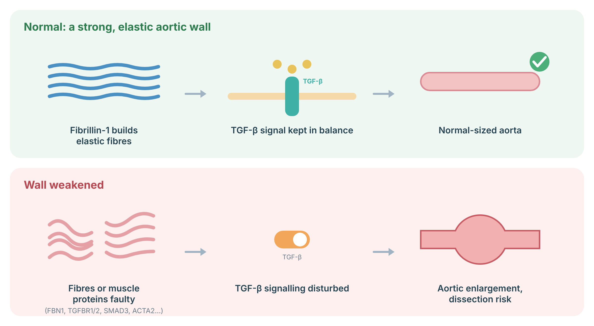
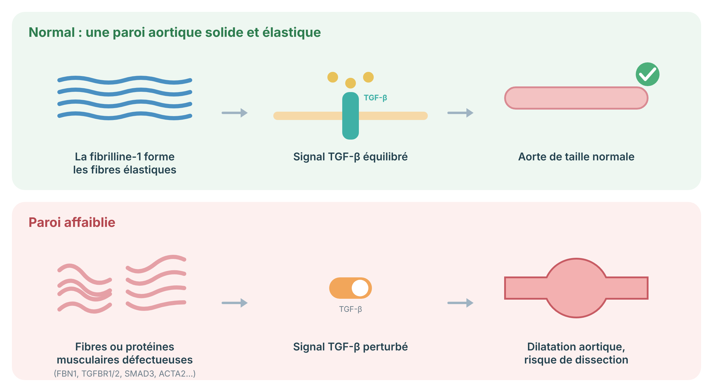

A surveillance and prevention protocol for Loeys-Dietz syndrome, a TGF-β pathway disorder with arterial tortuosity and aneurysms, covering whole-arterial-tree imaging, medical therapy, gene-specific surgical thresholds, pregnancy, and family testing.
Protocole de surveillance et de prévention du syndrome de Loeys-Dietz, une maladie de la voie TGF-β avec tortuosité artérielle et anévrismes, couvrant l'imagerie de tout l'arbre artériel, le traitement médical, les seuils chirurgicaux propres au gène, la grossesse et le dépistage familial.
Loeys-Dietz syndrome (LDS) is an inherited condition of the connective tissue, the "scaffolding" that gives blood vessels, skin, and joints their strength. It is caused by a change in one of several genes that control a signalling pathway called TGF-beta. The main health concern is the arteries: the aorta (the body's main artery) and other arteries can widen (aneurysm) or tear (dissection), sometimes at smaller sizes than in related conditions. Many people also have twisting arteries, joint or skin features, or allergies. With regular imaging, blood pressure control, and well-timed surgery, outcomes have improved greatly.
Le syndrome de Loeys-Dietz (SLD) est une maladie héréditaire du tissu conjonctif, l'« échafaudage » qui donne leur solidité aux vaisseaux sanguins, à la peau et aux articulations. Il est causé par une modification dans l'un de plusieurs gènes qui contrôlent une voie de signalisation appelée TGF-bêta. La principale préoccupation concerne les artères : l'aorte (l'artère principale du corps) et d'autres artères peuvent s'élargir (anévrisme) ou se déchirer (dissection), parfois à des tailles plus petites que dans des maladies apparentées. Plusieurs personnes ont aussi des artères sinueuses, des atteintes des articulations ou de la peau, ou des allergies. Avec une imagerie régulière, un bon contrôle de la pression artérielle et une chirurgie au bon moment, le pronostic s'est grandement amélioré.
Loeys-Dietz syndrome is an autosomal dominant heritable thoracic aortic disease (HTAD) caused by pathogenic variants in genes of the TGF-β signalling pathway: TGFBR1 (LDS1), TGFBR2 (LDS2), SMAD3 (LDS3, originally described as aneurysm–osteoarthritis syndrome), TGFB2 (LDS4), and TGFB3 (LDS5); SMAD2 has also been reported. Paradoxically, loss-of-function variants are associated with increased TGF-β signalling in the aortic wall. A substantial proportion of probands have a de novo variant; each child of an affected person has a 50% chance of inheriting the variant. Penetrance is high for vascular disease, but expressivity varies widely, even within families.
Le syndrome de Loeys-Dietz est une maladie aortique thoracique héréditaire (HTAD, selon l'acronyme anglais) à transmission autosomique dominante, causée par des variants pathogènes de gènes de la voie de signalisation du TGF-β : TGFBR1 (SLD1), TGFBR2 (SLD2), SMAD3 (SLD3, décrit à l'origine comme syndrome anévrisme–arthrose), TGFB2 (SLD4) et TGFB3 (SLD5); SMAD2 a aussi été rapporté. De façon paradoxale, les variants perte de fonction sont associés à une signalisation TGF-β accrue dans la paroi aortique. Une proportion importante des cas index présentent un variant de novo; chaque enfant d'une personne atteinte a 50 % de risque d'hériter du variant. La pénétrance de l'atteinte vasculaire est élevée, mais l'expressivité varie beaucoup, même au sein d'une famille.
The classic triad is arterial tortuosity and aneurysms, hypertelorism, and bifid uvula or cleft palate, but many individuals — particularly with SMAD3, TGFB2, or TGFB3 variants — have subtle or absent craniofacial features. Diagnosis therefore rests on molecular testing, typically with a multigene HTAD panel that also covers FBN1 (Marfan syndrome), COL3A1 (vascular Ehlers-Danlos syndrome), and the non-syndromic HTAD genes (see TAAD).
La triade classique associe tortuosité artérielle et anévrismes, hypertélorisme, et luette bifide ou fente palatine, mais plusieurs personnes — surtout avec des variants SMAD3, TGFB2 ou TGFB3 — ont des traits craniofaciaux subtils ou absents. Le diagnostic repose donc sur le test moléculaire, habituellement un panel multigène de HTAD couvrant aussi FBN1 (syndrome de Marfan), COL3A1 (syndrome d'Ehlers-Danlos vasculaire) et les gènes de HTAD non syndromiques (voir TAAD).
| Gene | Type | Clinical notes |
|---|---|---|
| Gène | Type | Notes cliniques |
| TGFBR1 | LDS1 | Aortic and arterial disease often aggressive; craniofacial features frequent |
| TGFBR1 | SLD1 | Atteinte aortique et artérielle souvent agressive; traits craniofaciaux fréquents |
| TGFBR2 | LDS2 | Similar to LDS1; dissection reported at relatively small aortic diameters |
| TGFBR2 | SLD2 | Semblable au SLD1; dissections rapportées à des diamètres aortiques relativement petits |
| SMAD3 | LDS3 | Early-onset osteoarthritis; aneurysms of aorta and other arteries |
| SMAD3 | SLD3 | Arthrose précoce; anévrismes de l'aorte et d'autres artères |
| TGFB2 | LDS4 | Often milder, later-onset aortic disease; variable systemic features |
| TGFB2 | SLD4 | Atteinte aortique souvent plus légère et plus tardive; traits systémiques variables |
| TGFB3 | LDS5 | Phenotype still being defined; aortic risk appears lower on average but dissection occurs |
| TGFB3 | SLD5 | Phénotype encore en définition; risque aortique en moyenne plus faible, mais des dissections surviennent |
The wall of the aorta contains elastic fibres built from fibrillin-1, smooth-muscle cells, and a growth signal called TGF-β that is kept in balance. Changes in fibrillin-1 (Marfan syndrome), in the TGF-β receptors or SMAD proteins (Loeys–Dietz syndrome), or in smooth-muscle contraction proteins (e.g. ACTA2, MYH11) weaken the wall. The aorta can then slowly enlarge (aneurysm) and is at risk of tearing (dissection), which is why imaging and blood-pressure control matter.

Sources: Milewicz DM, et al. Nat Rev Dis Primers 2021;7:64 (PubMed); Takeda N, et al. Int J Mol Sci 2018;19 (PubMed).
La paroi de l’aorte contient des fibres élastiques formées de fibrilline-1, des cellules musculaires lisses et un signal de croissance appelé TGF-β maintenu en équilibre. Des variations de la fibrilline-1 (syndrome de Marfan), des récepteurs du TGF-β ou des protéines SMAD (syndrome de Loeys-Dietz), ou des protéines de contraction musculaire (p. ex. ACTA2, MYH11) affaiblissent la paroi. L’aorte peut alors se dilater lentement (anévrisme) et risque de se déchirer (dissection); d’où l’importance de l’imagerie et du contrôle de la pression.

Sources : Milewicz DM, et al. Nat Rev Dis Primers 2021;7:64 (PubMed); Takeda N, et al. Int J Mol Sci 2018;19 (PubMed).
The most serious risk is a tear in the aorta or another artery. This is why scans are so important, even if you feel well. Other features can include easy bruising, soft or thin skin, joint looseness or early arthritis, flat feet, curvature of the spine, and allergies, asthma, or food-related gut inflammation. Not everyone has all of these.
Le risque le plus grave est une déchirure de l'aorte ou d'une autre artère. C'est pourquoi les examens d'imagerie sont si importants, même si vous vous sentez bien. D'autres atteintes possibles : ecchymoses faciles, peau mince ou douce, articulations lâches ou arthrose précoce, pieds plats, courbure de la colonne, ainsi qu'allergies, asthme ou inflammation digestive liée à l'alimentation. Ce ne sont pas toutes les personnes qui ont toutes ces atteintes.
| System | Key manifestations | Relevance |
|---|---|---|
| Système | Manifestations clés | Importance |
| Aorta | Aortic root aneurysm; dissection, sometimes at smaller diameters than in Marfan syndrome | Leading cause of morbidity and mortality |
| Aorte | Anévrisme de la racine aortique; dissection, parfois à des diamètres plus petits que dans le syndrome de Marfan | Principale cause de morbidité et de mortalité |
| Other arteries | Tortuosity (especially head and neck); aneurysms of branch, visceral, and intracranial arteries | Requires head-to-pelvis imaging |
| Autres artères | Tortuosité (surtout tête et cou); anévrismes des branches, des artères viscérales et intracrâniennes | Exige une imagerie de la tête au bassin |
| Heart | Mitral valve prolapse; bicuspid aortic valve; patent ductus arteriosus; atrial septal defect | Echocardiographic follow-up |
| Cœur | Prolapsus valvulaire mitral; valve aortique bicuspide; persistance du canal artériel; communication interauriculaire | Suivi échocardiographique |
| Craniofacial | Hypertelorism; bifid uvula or cleft palate; craniosynostosis; blue sclerae | Diagnostic clue; may need surgical care |
| Craniofacial | Hypertélorisme; luette bifide ou fente palatine; craniosynostose; sclérotiques bleutées | Indice diagnostique; soins chirurgicaux possibles |
| Skeletal | Scoliosis; pectus; joint laxity; club foot; cervical spine instability; early osteoarthritis (SMAD3) | Orthopaedic follow-up; cervical spine imaging before procedures |
| Squelette | Scoliose; pectus; laxité articulaire; pied bot; instabilité cervicale; arthrose précoce (SMAD3) | Suivi orthopédique; imagerie cervicale avant interventions |
| Skin | Translucent, velvety skin; easy bruising; dystrophic scars | Low morbidity |
| Peau | Peau translucide et veloutée; ecchymoses faciles; cicatrices dystrophiques | Faible morbidité |
| Immune / GI | Allergy, asthma, eosinophilic gastrointestinal disease | Often under-recognised; refer as needed |
| Immunitaire / digestif | Allergies, asthme, maladie gastro-intestinale à éosinophiles | Souvent sous-reconnu; orienter au besoin |
Compared with Marfan syndrome, Loeys-Dietz syndrome (especially TGFBR1/2) more often involves arteries beyond the aortic root and may dissect at smaller diameters. Surveillance must cover the whole arterial tree, and surgical thresholds are generally lower and gene-specific.
Comparativement au syndrome de Marfan, le syndrome de Loeys-Dietz (surtout TGFBR1/2) touche plus souvent les artères au-delà de la racine aortique et peut se disséquer à de plus petits diamètres. La surveillance doit couvrir tout l'arbre artériel, et les seuils chirurgicaux sont généralement plus bas et propres au gène.
You will have a heart ultrasound (echocardiogram) at diagnosis and again about six months later, so your team can see whether the aorta is changing. You will also have an MRI or CT scan of the arteries from the head down to the pelvis. After that, scans are repeated regularly — how often depends on your gene, your measurements, and your history.
Vous passerez une échographie cardiaque (échocardiogramme) au diagnostic, puis environ six mois plus tard, afin que votre équipe voie si l'aorte change. Vous aurez aussi une IRM ou une TDM des artères, de la tête jusqu'au bassin. Par la suite, les examens sont répétés régulièrement — la fréquence dépend de votre gène, de vos mesures et de vos antécédents.
Because surgical decisions may be triggered at diameters of 4.0–4.5 cm or by growth rates of a few millimetres per year, compare like with like (same modality, same convention) and confirm threshold-crossing values with a second study before acting.
Comme les décisions chirurgicales peuvent survenir à des diamètres de 4,0 à 4,5 cm ou selon des taux de croissance de quelques millimètres par année, comparer des examens comparables (même modalité, même convention) et confirmer toute valeur franchissant un seuil par un second examen avant d'agir.
Medicines that lower blood pressure and reduce stress on the artery wall are usually recommended. Keeping your blood pressure well controlled is one of the most important things you can do. Tell every doctor and pharmacist that you have Loeys-Dietz syndrome.
Des médicaments qui abaissent la pression artérielle et réduisent la contrainte sur la paroi artérielle sont habituellement recommandés. Bien contrôler votre pression artérielle est l'une des choses les plus importantes que vous puissiez faire. Informez chaque médecin et pharmacien que vous avez un syndrome de Loeys-Dietz.
Surgery to replace the widened part of the aorta is done before it can tear. In Loeys-Dietz syndrome, this is often recommended at a smaller size than in other conditions, and the exact timing depends on your gene and personal and family history. Surgery at an experienced aortic centre gives the best results.
La chirurgie visant à remplacer la portion élargie de l'aorte est faite avant qu'elle puisse se déchirer. Dans le syndrome de Loeys-Dietz, elle est souvent recommandée à une taille plus petite que dans d'autres maladies, et le moment exact dépend de votre gène et de vos antécédents personnels et familiaux. La chirurgie dans un centre aortique expérimenté donne les meilleurs résultats.
The 2022 ACC/AHA guideline provides gene-specific thresholds for prophylactic aortic root and ascending aortic replacement in LDS. In broad terms, surgery is considered at lower diameters for TGFBR1 and TGFBR2 (in the range of 4.0–4.5 cm, with the lower end reserved for high-risk features), and at higher diameters for TGFB2 and TGFB3. Consult the guideline table directly for the current gene-specific values; this summary is not a substitute.
La ligne directrice 2022 ACC/AHA fournit des seuils propres au gène pour le remplacement prophylactique de la racine aortique et de l'aorte ascendante dans le SLD. De façon générale, la chirurgie est envisagée à des diamètres plus bas pour TGFBR1 et TGFBR2 (de l'ordre de 4,0 à 4,5 cm, la limite inférieure étant réservée aux facteurs à haut risque) et à des diamètres plus élevés pour TGFB2 et TGFB3. Consulter directement le tableau de la ligne directrice pour les valeurs actuelles propres au gène; ce résumé ne s'y substitue pas.
Pregnancy puts extra strain on the aorta. If you are thinking about pregnancy, please talk to your genetics and cardiology teams first. Many people with Loeys-Dietz syndrome have safe pregnancies with careful planning, close monitoring, and delivery at a hospital with the right specialists.
La grossesse impose un effort supplémentaire à l'aorte. Si vous envisagez une grossesse, parlez-en d'abord à vos équipes de génétique et de cardiologie. Plusieurs personnes atteintes du syndrome de Loeys-Dietz mènent une grossesse sans danger grâce à une planification soignée, une surveillance étroite et un accouchement dans un hôpital disposant des bons spécialistes.
Staying active is good for you. Moderate activities like walking, cycling, and swimming are usually encouraged. Very heavy lifting, straining, contact sports, and competitive sports are generally avoided. Your team can help you choose activities that are safe for you.
Rester actif est bon pour la santé. Les activités modérées comme la marche, le vélo et la natation sont habituellement encouragées. Les charges très lourdes, les efforts avec blocage de la respiration, les sports de contact et les sports de compétition sont généralement évités. Votre équipe peut vous aider à choisir des activités sécuritaires.
Sudden severe chest, back, abdominal, or neck pain, fainting, or new neurological symptoms may signal an arterial dissection. Call 911 and tell the team you have Loeys-Dietz syndrome.
Une douleur soudaine et intense à la poitrine, au dos, à l'abdomen ou au cou, une perte de conscience ou de nouveaux symptômes neurologiques peuvent signaler une dissection artérielle. Composez le 911 et dites à l'équipe que vous avez un syndrome de Loeys-Dietz.
Because LDS is inherited in a dominant way, each of your children has a 1 in 2 chance of inheriting the gene change. Your parents, brothers, sisters, and children can be offered a genetic test for your specific gene change. Those who test negative usually do not need the special scans.
Comme le SLD se transmet de façon dominante, chacun de vos enfants a une chance sur deux d'hériter de la modification génétique. Vos parents, frères, sœurs et enfants peuvent se voir offrir un test pour votre modification génétique précise. Ceux dont le test est négatif n'ont habituellement pas besoin des examens spéciaux.
Original diagrams are the work of the author (© 2026 Dr. Andrew Shuen).
Les schémas originaux sont l'œuvre de l'auteur (© 2026 Dr Andrew Shuen).